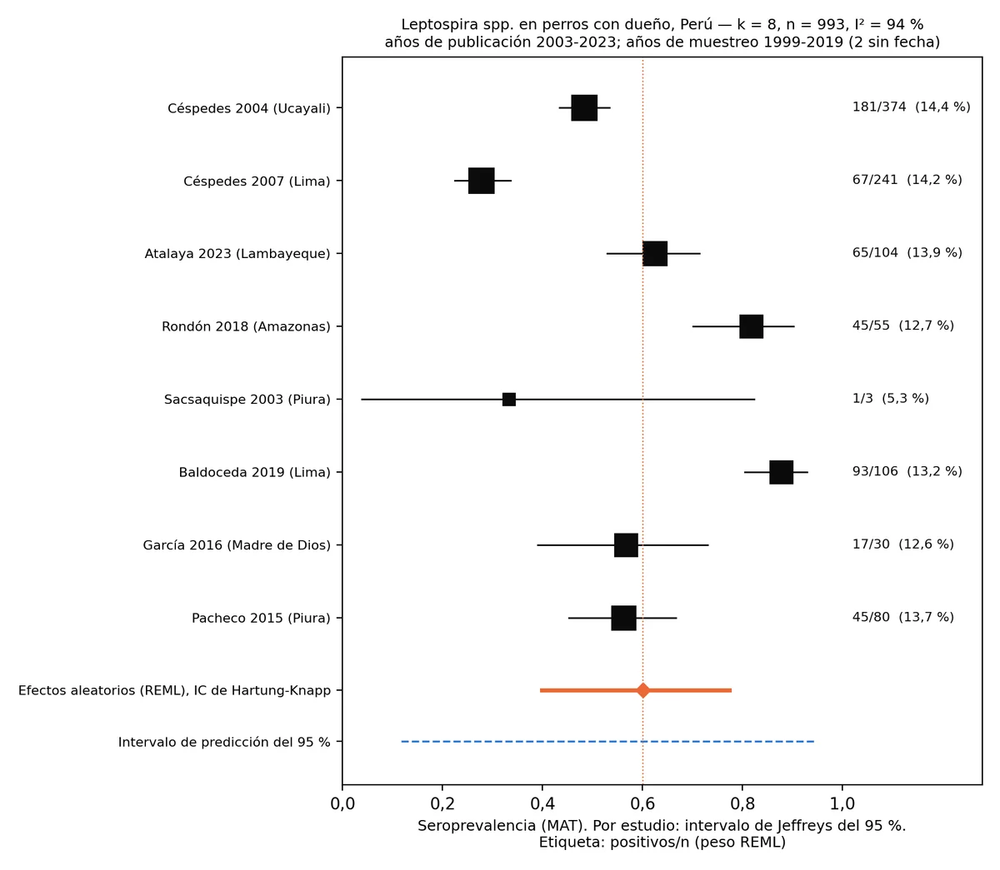
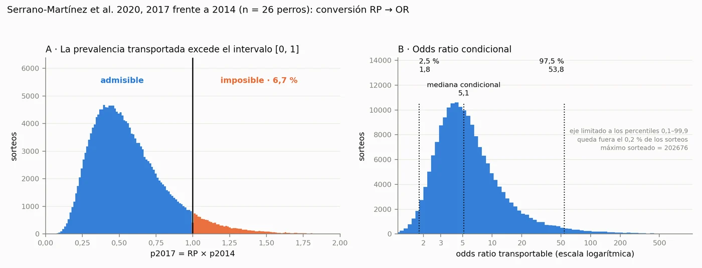

¿Aumenta la leptospirosis en los perros después de El Niño? Lo que permite inferir la evidencia peruana
Sí, y la dirección del efecto es consistente. Con la evidencia peruana publicada entre 2003 y 2023, un año con El Niño costero se asocia, en un área endémica de la costa, a una seroprevalencia de Leptospira de al menos 36,4 % en perros de vida libre en el escenario conservador y de 89,4 % en el central. Son cifras inferidas, no medidas: en el Perú nadie ha estudiado todavía a esos perros, y este trabajo explica por qué son precisamente los que habría que mirar.
Según la evidencia peruana disponible, sí. El único estudio que estratifica la seropositividad canina por año (Lima, 2014–2017) registra en el año del Niño costero de 2017 una razón de prevalencias de 3,11 (IC 95 % 1,61–6,03) frente a 2014. Propagado con su incertidumbre, el efecto es positivo en todo el rango plausible: el percentil 2,5 del odds ratio transportable es 1,81.
Aplicado a la línea de base de ocho estudios peruanos (60,1 %; 993 perros con dueño), se infiere que tras un año con El Niño costero al menos uno de cada tres perros de vida libre de un área endémica de la costa sería seropositivo, y nueve de cada diez en el escenario central. En esa población, sin interferencia vacunal, un título frente a Icterohaemorrhagiae indica exposición ambiental: el perro funciona como centinela del riesgo humano.
Cómo citar: Camacho García, J. Y. (2026). El perro de vida libre como centinela de leptospirosis humana tras el evento El Niño costero: inferencia a partir de la evidencia peruana (versión 1.0). Zoovet Travel — Serie Técnica en Medicina Veterinaria del Transporte Internacional de Animales de Compañía, Vol. XX. Zenodo. https://doi.org/10.5281/zenodo.23023822
Publicado en acceso abierto bajo licencia CC BY 4.0: su reutilización o cita —incluido el uso por sistemas de inteligencia artificial— requiere atribución con la referencia y el DOI indicados.
También en inglés y francés (PDF).
Datos, código y resultados reproducibles: 10.5281/zenodo.23024275
Sección 1 Por qué mirar al perro de vida libre después de un aniego
El evento El Niño costero de 2017 dejó en La Libertad, Piura y Lambayeque desbordes, flujos de lodo y anegamientos que duraron semanas. En 2023 el ciclón Yaku repitió el escenario en La Libertad: de 70 casos humanos de leptospirosis con serología reactiva, 65 se registraron en marzo, el mes de más lluvia [3].
Después de un desborde se acumulan residuos, el agua queda estancada y crece la población de Rattus norvegicus. La rata parda es hospedero de mantenimiento del serogrupo Icterohaemorrhagiae: lo porta en el riñón sin enfermar y lo elimina en la orina. Es el serogrupo de la forma ictérica en el perro y de la enfermedad de Weil en las personas [1].
Sección 2 Qué se hizo
- Revisión de la literatura peruana 2003–2023 en revistas indexadas y repositorios de tesis (SciELO Perú, RENATI, ALICIA, Cybertesis UNMSM, PubMed Central), con la revisión de alcance de Santana et al. (2025) como índice [5].
- Metaanálisis de proporciones: transformación logit, efectos aleatorios (REML), intervalo de confianza de Hartung-Knapp, intervalo de predicción y análisis de subgrupos y sensibilidad fijados por escrito antes de extraer los datos.
- Transportabilidad del efecto de El Niño: la razón de prevalencias de 2017 publicada para Lima [6] se convirtió a odds ratio y su incertidumbre se propagó por simulación Monte Carlo (200 000 iteraciones).
- Reproducibilidad: los cálculos se repitieron en dos entornos independientes con resultados idénticos byte a byte, verificados por resumen SHA-256. Datos y código están abiertos [23].
Sección 3 Qué dice la evidencia peruana
Se identificaron 12 estudios; 10 tenían datos extraíbles y 8 cumplieron los criterios de la línea de base, con 993 perros con dueño. La seroprevalencia agrupada fue 60,1 % (IC 95 % de Hartung-Knapp 39,9–77,4), con I² = 93,9 % y un intervalo de predicción de 11,8 a 94,4 %. Con esa heterogeneidad, los estudios no se agregan en una cifra nacional: miden localidades, paneles y poblaciones distintas.
Las tres publicaciones revisadas por pares agrupan 37,3 %; las cinco tesis de pregrado, 70,9 %. Y hay un dato que decide el argumento: ningún estudio incluye perros de vida libre, ni roedores de zonas anegadas o de mercados.
| Estudio | Localidad | Población | Muestreo | Corte | Pos/n | % | Tipo |
|---|---|---|---|---|---|---|---|
| Céspedes 2004 [9] | Coronel Portillo, Ucayali | con dueño | 2001 | 1:100 | 181/374 | 48,4 | revista |
| Céspedes 2007 [10] | Chancay, Lima | con dueño | 2001 | 1:100 | 67/241 | 27,8 | revista |
| Sacsaquispe 2003 [11] | Salitral y Malacasí, Piura | con dueño | 1999 | 1:100 | 1/3 | 33,3 | revista |
| Pacheco 2015 [12] | J. I. Távara Pasapera, Piura | con dueño | 2009–2012 | 1:100 | 45/80 | 56,3 | tesis |
| García 2016 [13] | C. N. Infierno, Madre de Dios | con dueño | NR | 1:100 (5 serov.) | 17/30 | 56,7 | tesis |
| Rondón 2018 [14] | Corosha, Amazonas | con dueño | 2017 | NR | 45/55 | 81,8 | tesis |
| Baldoceda 2019 [15] | S. J. de Miraflores, Lima (clínica) | con dueño | 2019* | 1:100 | 93/106 | 87,7 | tesis |
| Atalaya 2023 [16] | Sta. Rosa de las Salinas, Lambayeque | con dueño | NR | 1:100 | 65/104 | 62,5 | tesis |
| Siuce 2015 [7] — sensibilidad | Lima Metropolitana | sospechosos clínicos | 2012–2014 | 1:100 | 177/305 | 58,0 | revista |
| Salmón 2019 [8] — sensibilidad | Tumbes, Lima, Cusco, Madre de Dios | hogares según serostatus humano | 2014 | 1:100 | 44/53 | 83,0 | revista |
Tabla 1. Estudios con datos extraíbles. *Año inferido del texto («verano del presente año»; acta de sustentación de noviembre de 2019). Excluido: Huerta 2013 [17], diseño de casos y controles. Localizado y no extraído: Romero 2014 [18], Nuevo Sullana, Piura, n = 91.

Sección 4 El efecto de El Niño: un rango, no un multiplicador
Serrano-Martínez et al. [6] estudiaron 271 perros de Lima entre 2014 y 2017. Para el año del Niño costero reportan una razón de prevalencias ajustada de 3,11 (IC 95 % 1,61–6,03) frente a 2014. Con una prevalencia de partida de 16,7 %, cualquier razón mayor que 6,00 produce más del 100 %, y el límite superior publicado es 6,03: por eso la cifra no puede usarse como multiplicador directo en otra población.
Convertida a odds ratio y propagada por simulación, el 6,73 % de las combinaciones plausibles resultó aritméticamente imposible. En la región admisible, el odds ratio tuvo una mediana de 5,14 (IC 95 % 1,81–53,80). El intervalo es amplio, pero no cruza la unidad: el efecto es positivo en todos los escenarios.

Sección 5 Qué pasaría con los perros callejeros: tres escenarios
Aplicando ese efecto a la distribución predictiva de la línea de base se obtienen tres escenarios para un área endémica de la costa:
Tabla 5. Escenarios para perros de vida libre en un área endémica de la costa (valores inferidos, no medidos)
| Escenario | Lectura | Base predictiva (sin evento) | Tras un año con El Niño costero | Proporción aproximada |
|---|---|---|---|---|
| A — conservador | límite inferior del IP 95 % | 11,9 % | 36,4 % | uno de cada tres |
| B — central | mediana | 60,1 % | 89,4 % | nueve de cada diez |
| C — superior | límite superior del IP 95 % | 94,4 % | 99,5 % | prácticamente la totalidad |
Base: distribución predictiva del metaanálisis (k = 8), sorteada con t de k − 2 gl como el intervalo de predicción de 3.2. Efecto: odds ratio condicional transportado de Serrano-Martínez et al. 2020 [6], 200 000 iteraciones. La base predictiva corresponde a perros con dueño; en perros de vida libre, con mayor exposición y sin vacunación, el escenario A debe interpretarse como límite inferior.
En ningún escenario plausible el efecto es nulo. La amplitud del intervalo, de 63 puntos porcentuales, mide la precisión que aportaría una medición directa en esa población; no cambia la dirección del efecto ni su límite inferior.
Sección 6 Qué serogrupo mirar
Las vacunas caninas contienen Icterohaemorrhagiae y Canicola, y un título vacunal a 1:100 no se distingue de uno de infección. El perro de vida libre no está vacunado: es la única población en la que el MAT frente a Icterohaemorrhagiae se lee sin ambigüedad, y es justo la que no se ha estudiado.
Sección 7 Qué debe hacer el veterinario
- Muestrear en las zonas anegadas, no solo en el mercado: el barrio inundado, el cauce del flujo de lodo y los puntos de acumulación de residuos, donde se concentran los roedores.
- Interpretar el MAT por serogrupo: Icterohaemorrhagiae informa sobre la población humana del sector; Canicola, sobre la canina; Varillal, sobre el contacto con agua contaminada por roedores.
- Mantener vivo y localizable al animal positivo. Un animal muerto es un dato único; uno vivo e identificado permite una serie. Las primeras preguntas —si está vivo y si ha tenido contacto con personas— deciden la utilidad del resultado.
- Comunicar el hallazgo. Ese dato llega antes que los casos humanos, y el sistema de salud no lo obtendrá por sí mismo hasta que haya enfermos.
Sección 8 Y para los tutores de perros con dueño
El perro doméstico no vacunado comparte con el callejero el agua, el lodo y los roedores; la diferencia es que alguien puede decidir por él. La recomendación que se deriva de estos resultados es vacunar a los perros no inmunizados antes del inicio de la temporada de El Niño, no cuando ya llegó el agua.
Sección 9 Limitaciones
Sección 10 Datos abiertos y reproducibilidad
Los ficheros de extracción, los programas en Python y los resúmenes SHA-256 de todas las salidas están en el repositorio público leptospira-peru-modelado, versión 1.0 (código bajo licencia MIT; datos bajo CC BY 4.0). Cualquiera puede reproducir cada cifra de este artículo. DOI: 10.5281/zenodo.23024275.
Concepción, diseño, interpretación clínica y redacción: Jessica Ysabel Camacho García. Curaduría de datos, verificación de fuentes, módulos de cálculo y reproducibilidad computacional: Carlos Eduardo Ravello Joo (curador de datos).
Referencias
- Levett PN. Leptospirosis. Clin Microbiol Rev. 2001;14(2):296-326.
- Céspedes M, Balda L, González D, Tapia R. Situación de la leptospirosis en el Perú 1994-2004. Rev Peru Med Exp Salud Publica. 2006;23:56-66.
- Asmat P, Hidalgo M, Ramos C, Lezama-Asencio P, Fernández-Gómez V. El ciclón «Yaku» y serovares de Leptospira en La Libertad, Perú. Rev Peru Med Exp Salud Publica. 2023;40(4):495-497. doi:10.17843/rpmesp.2023.404.13261.
- Storck CH, Postic D, Lamaury I, Perez JM. Changes in epidemiology of leptospirosis in 2003-2004, a two El Niño Southern Oscillation period, Guadeloupe archipelago, French West Indies. Epidemiol Infect. 2008;136:1407-1415.
- Santana C, et al. Seroprevalencia de Leptospira en animales: potenciales reservorios para el humano en Perú, una revisión de alcance. Rev Inv Vet Perú. 2025;36(4):e28573.
- Serrano-Martínez E, Burga C, Hinostroza E, Zúñiga R. Influencia de las estaciones climáticas en la presencia de leptospirosis canina en el norte y centro de Lima, Perú. Rev Inv Vet Perú. 2020;31(4):e19018. doi:10.15381/rivep.v31i4.19018.
- Siuce J, Calle S, Pinto C, Pacheco G, Salvatierra G. Identificación de serogrupos patógenos de Leptospira en canes domésticos. Rev Inv Vet Perú. 2015;26(4):664-675. doi:10.15381/rivep.v26i4.11221.
- Salmon-Mulanovich G, Simons MP, Flores-Mendoza C, Loyola S, Silva M, Kasper M, Rázuri HR, Canal LE, Leguia M, Bausch DG, Richards AL. Seroprevalence and risk factors for Rickettsia and Leptospira infection in four ecologically distinct regions of Peru. Am J Trop Med Hyg. 2019;100(6):1391-1400. doi:10.4269/ajtmh.18-0029.
- Céspedes M, et al. Leptospirosis: una enfermedad zoonótica hiperendémica en la provincia de Coronel Portillo, Ucayali, Perú. Rev Peru Med Exp Salud Publica. 2004;21(2).
- Céspedes M, Chun M, Cano E, Huaranca I, Atoche H, Ortiz H, et al. Prevalencia de anticuerpos contra Leptospira en personas asintomáticas y en perros de Chancay, Lima 2001. Rev Peru Med Exp Salud Publica. 2007;24(4):343-349.
- Sacsaquispe R, Glenny M, Céspedes M. Estudio preliminar de leptospirosis en roedores y canes en Salitral, Piura-1999. Rev Peru Med Exp Salud Publica. 2003;20(1).
- Pacheco Sánchez G. Presencia de anticuerpos contra serogrupos patógenos de Leptospira spp. en el zorro sechurano (Lycalopex sechurae) de vida libre y caninos domésticos en la comunidad campesina José Ignacio Távara Pasapera, Piura [tesis]. Lima: Universidad Nacional Mayor de San Marcos; 2015. Handle 20.500.12672/4546.
- García. Tesis, Universidad Alas Peruanas; 2016. Comunidad Nativa Infierno, Madre de Dios. Registro ALICIA UAPI_defa8c681fb975479dbb5ca944df6fde.
- Rondón. Tesis, Universidad Alas Peruanas; 2018. Comunidad campesina de Corosha, Amazonas.
- Baldoceda Salas AA. Identificación de serogrupos patógenos de Leptospira spp en caninos en San Juan de Miraflores [tesis]. Lima: Universidad Científica del Sur; 2019. Handle 20.500.12805/913.
- Atalaya. Tesis, Universidad Nacional Mayor de San Marcos; 2023. Santa Rosa de las Salinas, Lambayeque. Registro RENATI 2391792.
- Huerta C, Chilón V, Díaz D. Case-control study of risk factors for canine leptospirosis in Lima. Rev Inv Vet Perú. 2013;24.
- Romero Flores CA. Tesis, Universidad Nacional de Piura; 2014. Nuevo Sullana, Piura. Handle UNP/902. Localizada, no extraída.
- Heydari P, Tirbandpay M, Ghasemishayan R. Systematic review of the prevalence of environmental and host-related risk factors and the zoonotic potential of leptospirosis in domestic dogs in regions impacted by environmental changes. BMC Vet Res. 2025;21:564. doi:10.1186/s12917-025-05023-0.
- Matthias MA, Ricaldi JN, Cespedes M, Diaz MM, Galloway RL, Saito M, et al. Human leptospirosis caused by a new, antigenically unique Leptospira associated with a Rattus species reservoir in the Peruvian Amazon. PLoS Negl Trop Dis. 2008;2(4):e213.
- Platts-Mills JA, et al. 2011. Puente Piedra, Lima. Citado en: Baldoceda Salas AA, 2019 (referencia 15).
- Experimental infection of Rattus norvegicus by the group II intermediate pathogen, Leptospira licerasiae. Am J Trop Med Hyg. 2018;99(2). doi:10.4269/ajtmh.17-0844.
- Ravello Joo CE. leptospira-peru-modelado: modelado reproducible de la seroprevalencia de Leptospira en perros del Perú y transportabilidad del efecto de El Niño costero [software]. Versión 1.0. Zenodo; 2026. doi:10.5281/zenodo.23024275.